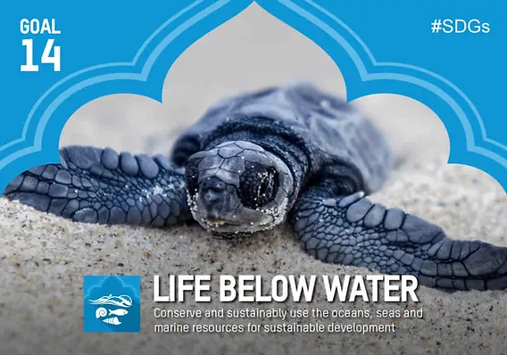

Goal 14 focuses on conserving and sustainably using oceans, seas, and marine resources, which are vital for life on Earth. Covering three-quarters of the planet, oceans contain 97% of its water and 99% of living space by volume. They provide critical resources like food, medicines, and carbon storage, while acting as natural buffers against storms. However, oceans face severe threats, including pollution, plastic waste, and rising acidity, endangering marine life and food security. Marine heatwaves and coral reef destruction from climate change exacerbate the issue, while mismanaged tourism and overfishing add further strain. Urgent action is needed to protect this vast yet fragile resource, which supports livelihoods, regulates the climate, and offers immense potential for scientific discovery and human health benefits.